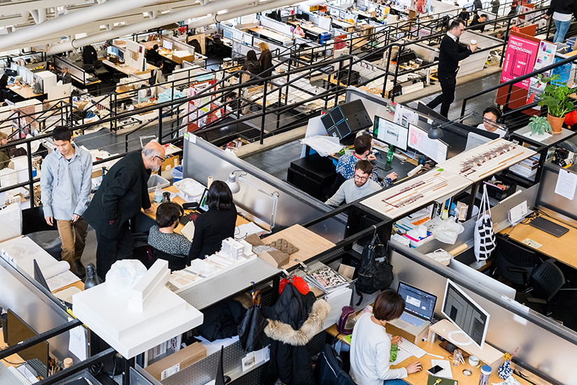
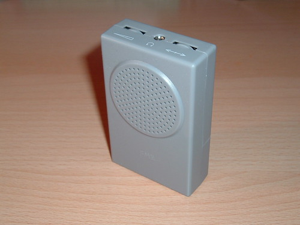
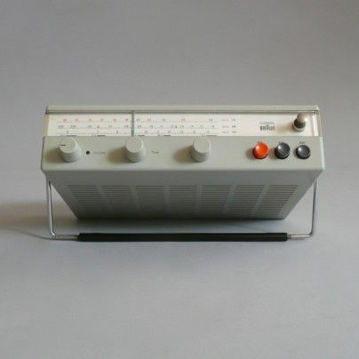

/week one: final project ideation and planning
# the three ideas so far...
# --------------------------------------------------------------------------------
numero uno: music meditation device
being at the graduate school of design, you get a desk in 'the trays', the tiered floors of desk cubicles for all students (see image below). it's beautiful but noisy. there is constant conversation, visits to the toilets and construction that doesn't seem end. to block out the noise, listening to music can be great but i often find it distracting. earplugs can work too but i have a mild form of tinnitus (thanks to some bad sound systems). the light buzzing i hear is worst when i'm in quiet environments, when i'm tired and when i'm trying to concentrate i.e. studying. i don't want noise cancelling but noise conversion.

what i want to build is a device that takes the sounds around me and turns it into music for studying. i want to connect my headphones to the device and play music that is aligned with the pitch at which i hear ringing. there are two main sources of inspiration: (1) the buddha machine and (2) the braun radio. the buddha machine generates sounds through looping audio clips with slight variations each time. the sounds create a hum, ideal for meditation. the braun radio is an icon of industrial design that is beautiful to just have on your desk. im imagining a blend of these two that can become my study companion.
 
numero due: soil moisture and hygrometer device
my final year thesis topic is on agricultural land degradation and ways to heal land that was once arable. analysing soil health and atmospheric conditions are a critical step in being able to revive an area. two key measurements are soil moisture and air humidity. one of the challenges of this problem is its scale. a small plot can be measured using existing technolgoies but the value is in a solution that can scale to large swathes of land. this demands a network of small and cheap sensors.
i would like to build a basic sensor for measuring soil moisture and humidity, that can then relay to other sensors in a network. the constraint on the design is that it must be simple enough to remain cheap and to be scable for measuring across many acres.
numero tre: ice massager
over the summer, i had knee surgery to remove damaged cartilage. after multiple knee injuries from basketball, skiing and netball, i now have arthiritis in my knee. while i am not in pain, i still get swelling in my knee if i'm walking and standing for a couple of hours. the best solution is to follow RICE (rest, ice, compression, elevation) protocol but typically when at my desk, I am unable to follow it properly.
i would like to build a compact device that wraps around my knee, can be filled with cold water and then circulates and massages my knee to reduce inflamation. through water pulses in certain locations, i want to apply cold pressure around my kneecap. i would want to be able to wear the device at my desk and have everything comfortably rest on my leg.